⑦ポスターギャラリー
柴原研究室論文ギャラリーへのリンク：
https://www.omu.ac.jp/eng/shibahara/intro/paper/index.html
柴原研究室では、学会での口頭発表だけではなく、ポスターセッションへの参加も
積極的に行っており、多くの受賞者を輩出しています。
以下に研究室で作成されたポスターの一例を紹介します。
※このサイトに関するお問い合わせは、柴原(shibahara.marine_at_omu.ac.jp(_at_は＠))までお願いします。
(各ポスターをクリックすると拡大されます)
| ベイジアンニューラルネットワークを用いた多層溶接継手における溶接変形予測 | 補修溶接時における溶接変形・残留応力についての検討 |
相変態を考慮した 溶接残留応力解析 |
|
| 原田青空、佐々木駿伍、前田新太郎、生島一樹、柴原正和 | 清水大毅、山内悠暉、王聞達、高橋準也、星加貴久、前田新太郎、生島一樹、柴原正和 | 横山侑祐、佐々木駿伍、前田新太郎、生島一樹、柴原正和 | |
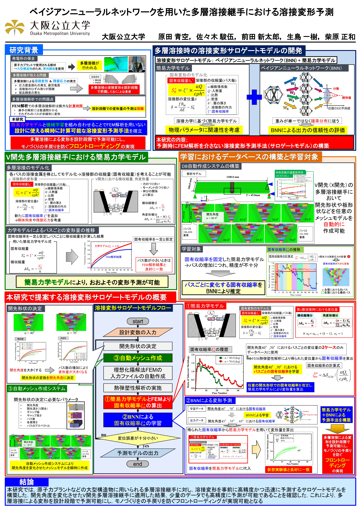 |
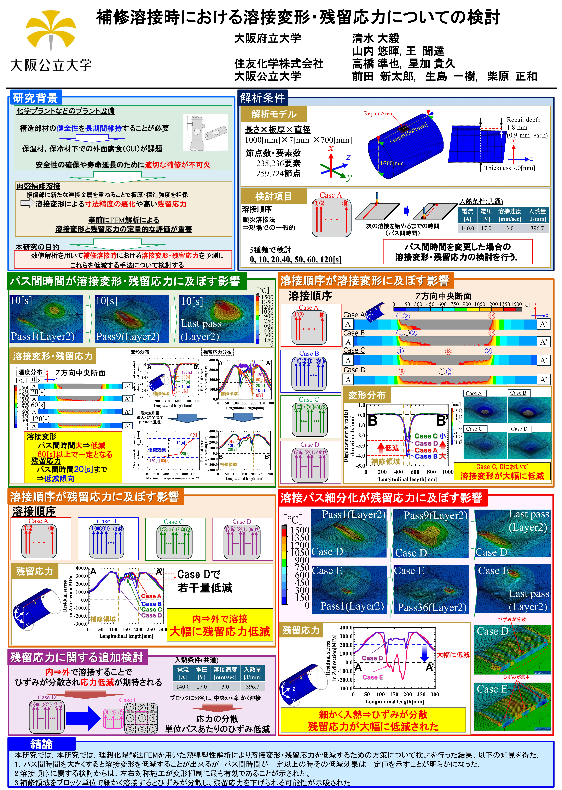 |
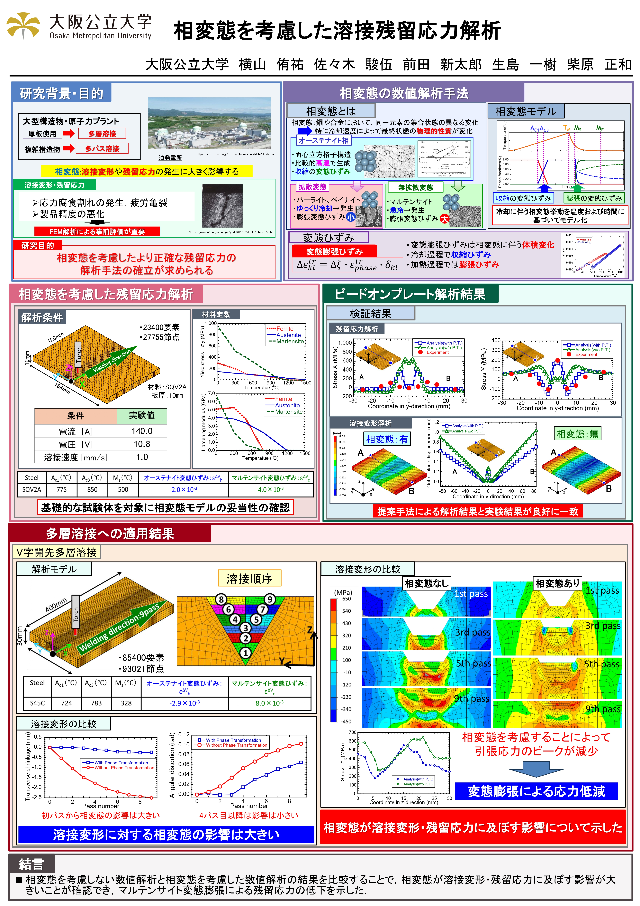 |
|
| 柴原研究室の最新の研究 2023 |
Euler法を用いたFSWの プロセス・力学解析 |
熱弾塑性変位場を有する構造物のデジタルツインの開発 | 発電用プラント配管における溶接熱影響部の余寿命推定に関する検討 |
| 柴原研究室 | 油井達哉、前田新太郎、生島一樹、柴原正和 | 松岡諒、山邉晃瑠、前田新太郎、生島一樹、柴原正和、峰松伸行 | 山内悠暉、木谷悠二、市川亮大、生島一樹、柴原正和、西田秀高、荒井正行 |
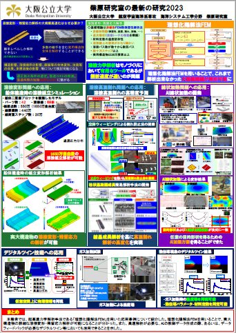 |
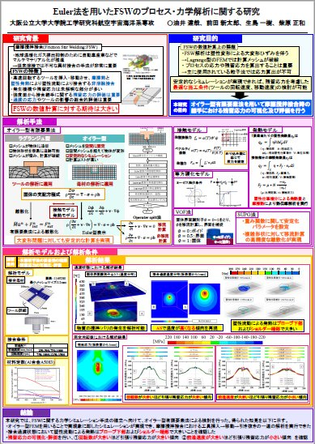 |
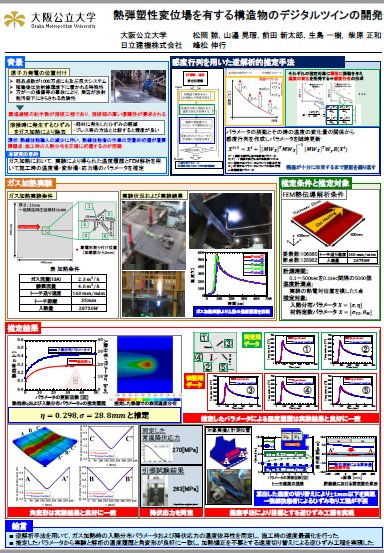 |
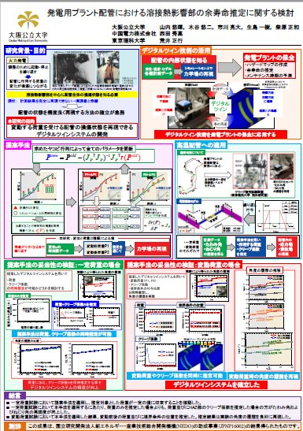 |
| 修正熱収縮法による簡易残留応力予測法の開発 | 局部PWHTを用いた溶接残留応力低減法とその予測 | AI強化学習を用いた溶接高温割れ防止システム | 画像処理を用いた溶接変形の計測 |
| 幅田真史、手銭永遠 前田新太郎、生島一樹、柴原正和 |
田中亮匡、川瀬充弘、前田新太郎 生島一樹、柴原正和 |
廣瀬天空、加藤拓也、前田新太郎 生島一樹、柴原正和 | 生島一樹、柴原正和 |
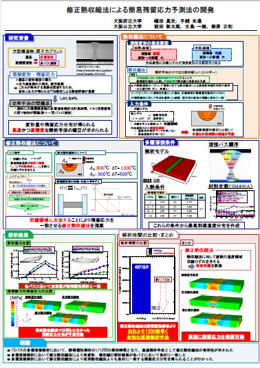 |
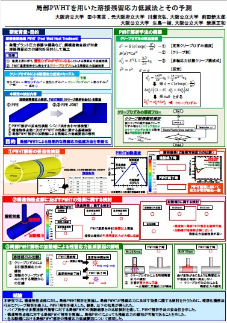 |
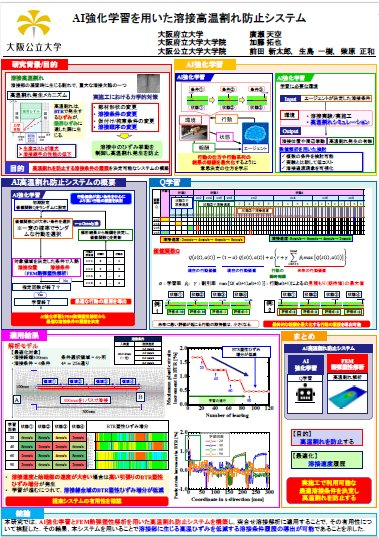 |
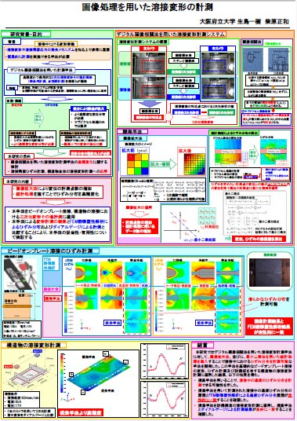 |
| アルミ合金の防撓構造ひずみ取り自動化システムの提案 | HAZ割れの力学シミュレーション | Study of Solidification Cracking under FCB Welding of Butt Welding | Study on Residual Stress Distribution on Shot Peening Process Using Large Scale Numerical Analysis |
| 加藤拓也、芦田崚、 生島一樹、柴原正和 |
織田祐輔、生島一樹、柴原正和、前田新太郎、森裕章 | Shintaro MAEDA, Yui OKIMI, Noboru Kiji, Masakazu SHIBAHARA | Yusuke YAMADA, Kazuki IKUSHIMA, Masakazu SHIBAHARA |
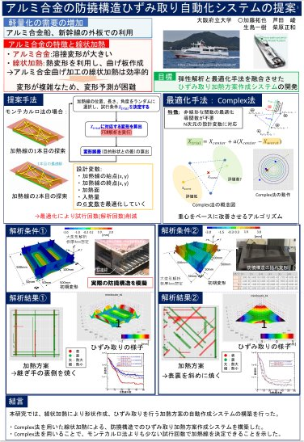 |
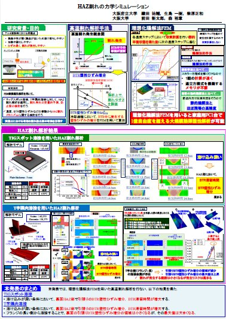 |
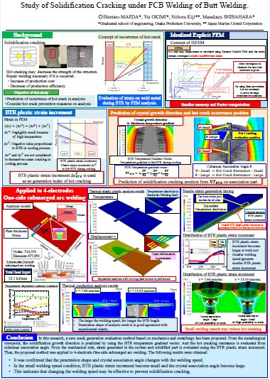 |
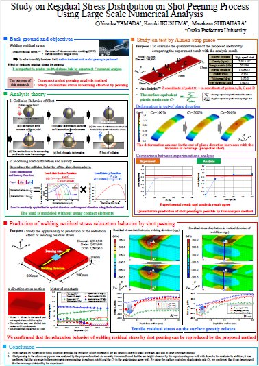 |
| 数理最適化手法に基づくひずみ取りの自動化に関する検討 | 開先開口挙動が溶接高温割れに及ぼす影響 | 並進加熱による高温割れ防止法についての検討 | ガス加熱時における変形に及ぼす入熱分布の影響 |
| 加藤拓也、芦田崚、柴原正和 | 織田祐輔、生島一樹 柴原正和、前田新太郎 |
前田新太郎、三ッ井佑太 織田祐輔、生島一樹、柴原正和 |
高橋陸、芦田崚、柴原正和 夏目糧平、小田和生、山崎洋輔、中谷光良 |
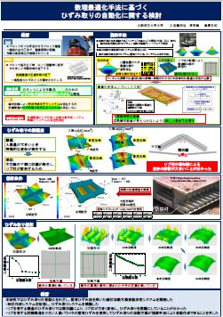 |
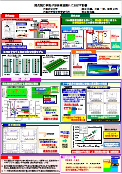 |
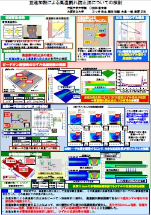 |
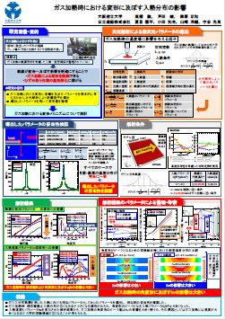 |
| 原子力発電機器における応力改善工法の長期安全性評価のための基盤技術開発 | Approach for Automatic Planning for Line Heating Using Reinforcement Learning and Non-linear FEM Simulation | ツールの形状によるFSW特性向上の解析検討 | 多層溶接時における溶接変形に及ぼす拘束治具の影響に関する検討 |
| 柴原 正和、木谷 悠二、生島 一樹、秋田 貢一、鈴木 裕士、井川 直樹、古川 敬、西川 聡 | Manami MAEKAWA, Akira NOTSU, Yoshihiko TANGO, Noboru KIJI and Masakazu SHIBAHARA | 李 志浩、家下輝也、柴原正和 | 河尻義貴、柴原正和 |
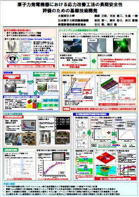 |
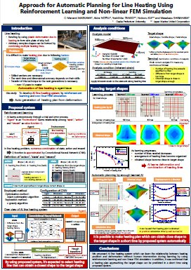 |
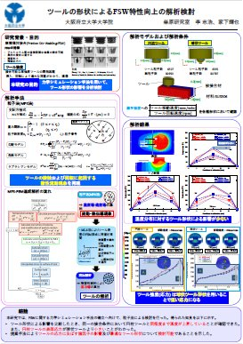 |
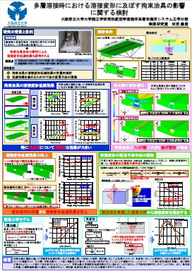 |
| 超高速大規模解析手法 「理想化陽解法FEM」 |
理想化陽解法FEMを用いた溶接変形解析の実機適用 | 理想化陽解法FEMによる金属３D積層時の応力・変形解析 | 溶接力学問題に対するニューラルネットワークの応用について |
| 大阪府立大学 柴原研究室 | 前田新太郎，原田貴明，生島一樹， 河原充，柴原正和，桑原仁志， 加藤大雄，金武完明，横道健 | 竹内梨乃，山田祐介，生島一樹，河原充，柴原正和 | 前川真奈海，生島一樹，柴原正和 |
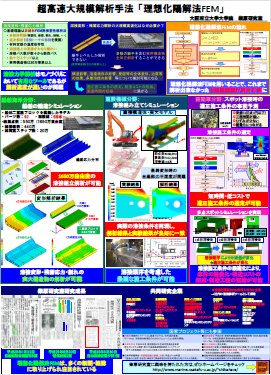 |
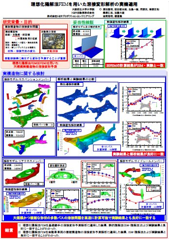 |
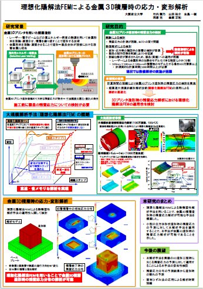 |
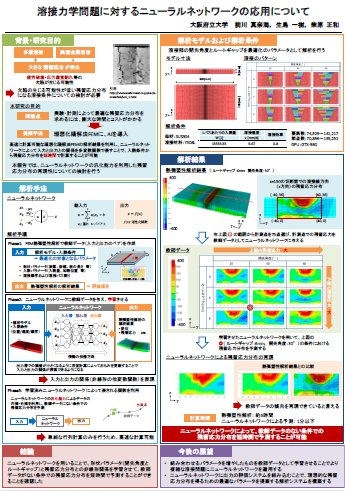 |
| 柴原研究室 研究室紹介 ―超高速大規模FEM解析― |
多層溶接時における溶接変形に及ぼす拘束治具の影響に関する検討 | 狭開先2トーチ高速円周MAG溶接時における凝固割れに関する検討 | ルートギャップおよび仮付けを考慮した初層溶接時における溶接変形解析 |
| 前田新太郎 | 河尻義貴 | 原田貴明，生島一樹，柴原正和，森本拓也，木村文映 | 岩田昂士 |
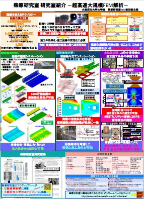 |
.jpg) |
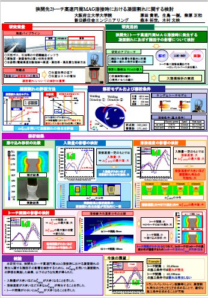 |
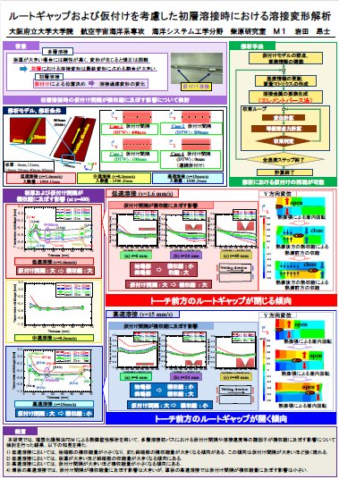 |
| 薄板構造物の溶接変形に及ぼす諸因子の影響に関する検討 | 原子力発電機器における応力改善工法の長期安全性評価のための基盤技術開発 | 摩擦攪拌接合(FSW)に関する力学シミュレーション手法の確立 | 高温割れの力学シミュレーション |
| 前田新太郎、原田貴明 生島一樹、柴原正和 |
柴原正和、木谷悠二、生島一樹、秋田貢一、鈴木裕士、井川直樹、古川敬、西川聡 | 家下 輝也、生島 一樹、柴原 正和、松澤周平、光藤健太、三宅由莉佳、宮坂史和 | 山田祐介、生島一樹、柴原正和、森裕章 |
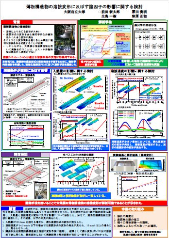 |
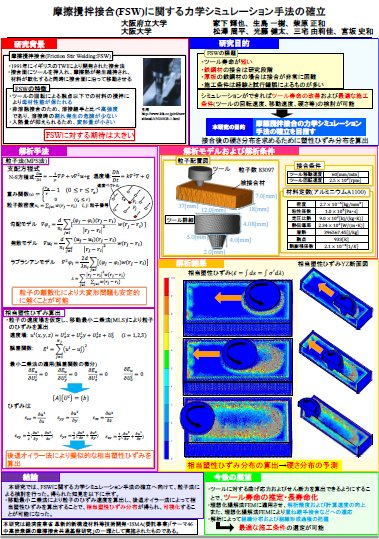 |
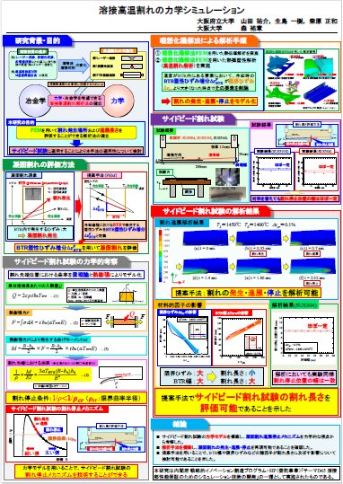 |
|
| 突合せ溶接時における溶接変形に及ぼす仮付けの影響に関する検討 | FCB片面自動溶接時における凝固割れに関する力学的検討 | ３次元連成スポット溶接 シミュレーションを用いた ナゲット形成における適正施工条件に関する研究 |
連続体損傷モデルに基づく スポット溶接時の破断モードに関する研究 |
| 今智史 | 今智史 | 重政拓海、夏目糧平 | 生島一樹、矢野貴大、夏目糧平、柴原正和、大畑充 |
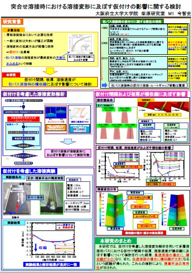 |
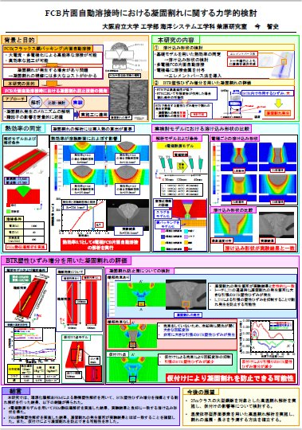 |
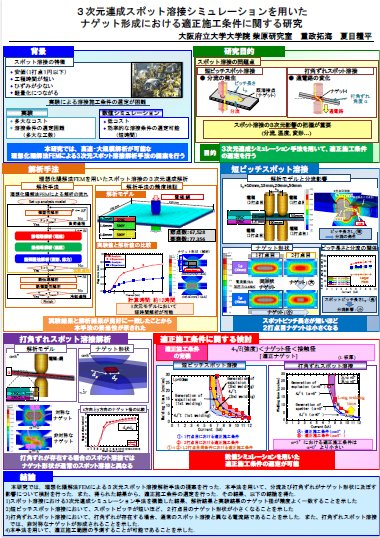 |
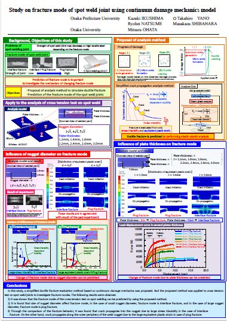 |
| 橋梁構造物製作時の多層溶接における溶接変形解析 | 理想化陽解法FEMによる 弾性固有ひずみ解析 |
画像を用いたバラストタンクにおける腐食度測定法 に関する研究 |
GPUを用いた並列化理想化陽解法FEMによる熱弾塑性解析 |
| 竹内啓洋 | 重政拓海 | 濱田雅規 | 竹内啓洋 |
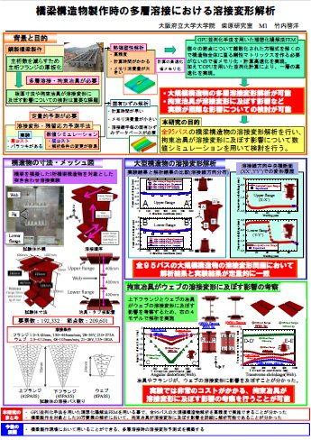 |
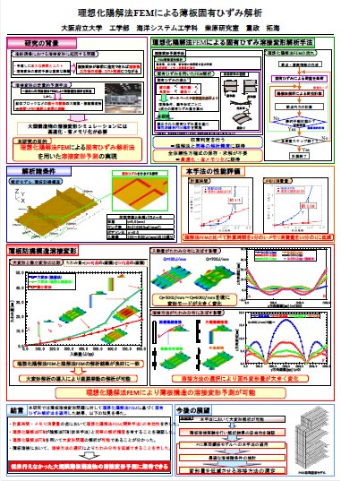 |
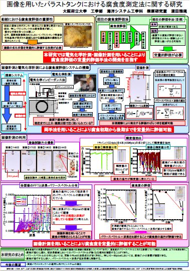 |
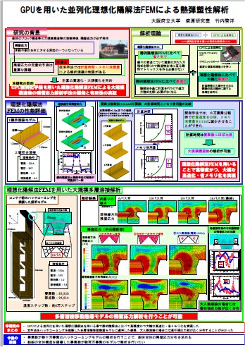 |
| 理想化陽解法FEMを用いた船体二重底ブロック溶接組立の大規模変形解析 | GPUを用いた理想化陽解法FEMによる大規模溶接過渡応力・変形解析 | 理想化陽解法FEMによる溶接移動熱源問題の熱伝導解析手法の開発 | アーク溶接プロセスを考慮した高精度溶接変形解析システムの構築とその応用 |
| 生島一樹 | 岡田崇志 生島一樹 | 壺井翔太 | 土橋知幸 |
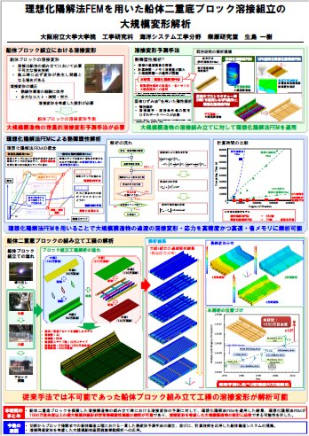 |
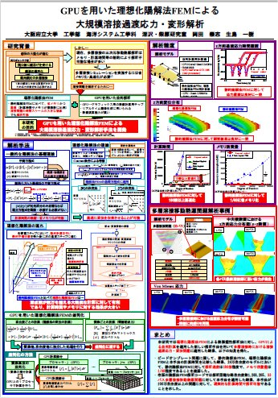 |
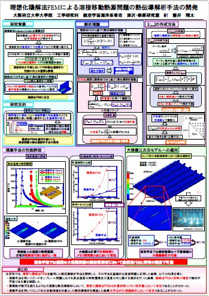 |
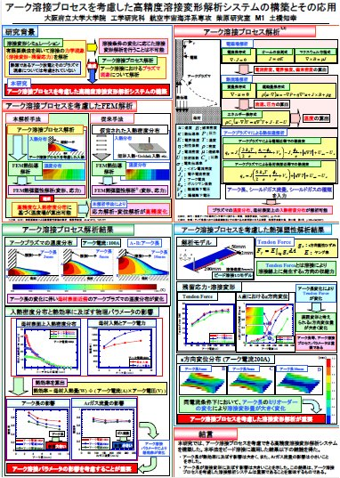 |
| 陽解法FEMに基づく大規模溶接構造物の高速解析手法の開発 | MLPG法による熱弾塑性解析手法の開発と溶接問題への応用 | ステレオ画像法を用いた溶接時における三次元溶接変形その場計測 | 陽解法FEMによる大規模構造の弾性固有ひずみ解析 |
| 生島一樹 | 堀友則 | 恩田尚拡 | 南 雄介 |
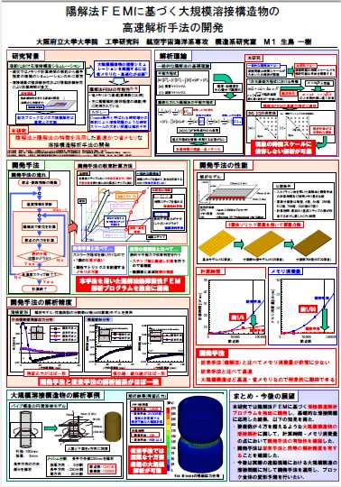 |
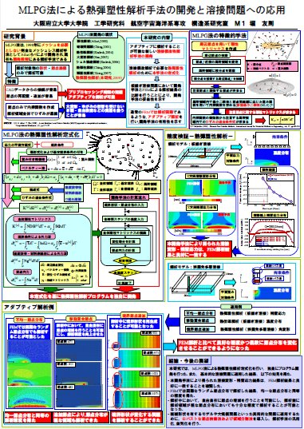 |
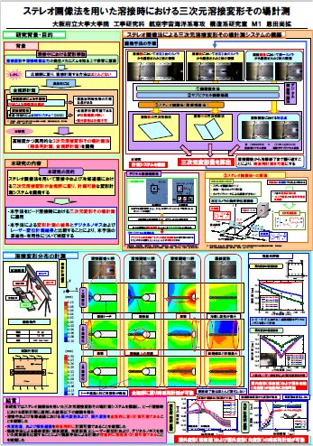 |
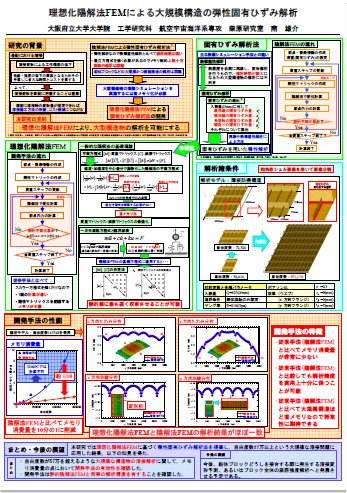 |
| ステレオ画像法を用いた3次元変形計測法による溶接固有変形同定法の開発 | ひずみを考慮した画像計測法によるゴム材料の全視野変位 ･ひずみ計測の高精度化 |
一軸引張一軸圧縮をうける薄板の崩壊挙動について-LNG船球殻タンクの圧壊挙動について- | |
| 生島一樹､河村恵里 | 大平紘敬 | 紙谷洋一 | |
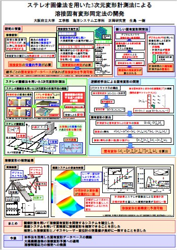 |
|||
| デジタルカメラを用いた溶接中における溶接変形計測法の開発 | MLPG(メッシュレス)法を用いた溶接ビード上端部における応力集中の解析 | デジタル画像相関法を用いた大変形・大回転時における変形・ひずみ計測法の開発 | 非線形有限要素法によるLNG船球殻タンクの構造設計法に関する研究 |
| 恩田尚拡 | 有村翼 | 大平紘敬 | 神谷洋一 |
| 繰り返し曲げを受ける防撓箱型断面構造の崩壊挙動 | MLPG(メッシュレス)法による溶接構造解析手法の開発 | ステレオ画像法による三次元形状・変形計測法の開発 | 係留索の消耗に関する研究 |
| 長尾誠 | 旦越雄 有村翼 | 河村恵里 大平紘敬 | 阿部聖 |
| 画像処理による接触変形・応力計測法の開発 | デジタルカメラ・レーザー変位計を用いたハイブリッド型高精度固有変形・残留応力推定法の開発 | 高速高精度三次元高温割れ解析法の開発とその応用 | MITC(Mixed Interpolation of TensorialComponents)曲面シェル要素の開発 |
| 山口晃司 | 松本直博 | 野田裕久 | 平松宗也 伊藤絵美 |
| FEMによるプラズマ切断時の電極割れに関する力学的検討 | 溶接高温割れを考慮した溶接条件最適化システムの開発 | 大型鋼板溶接時における溶接変形に関する力学的検討 | 反復サブストラクチャー法を用いたFEMによる溶接変形の解析 |
| 松本直博 | 旦越雄 | 大野高嗣 | 秦 睦弥 |
{kind=link}
修正熱収縮法による簡易残留応力予測法の開発（PDF文書：738.1KB）
Euler法を用いたFSWの プロセス・力学解析（PDF文書：1.7MB）
AI強化学習を用いた溶接高温割れ防止システム（PDF文書：1.4MB）
熱弾塑性変位場を有する構造物のデジタルツインの開発 （PDF文書：1.9MB）
発電用プラント配管における溶接熱影響部の余寿命推定に関する検討 （PDF文書：1.7MB）
局部PWHTを用いた溶接残留応力 低減法とその予測（PDF文書：2.8MB）
数理最適化手法に基づく ひずみ取りの自動化に関する検討（PDF文書：606.0KB）
Study of Solidification Cracking under FCB Welding of Butt Welding（PDF文書：1.4MB）
ツールの形状によるFSW特性向上の解析検討（PDF文書：1.3MB）
理想化陽解法FEMを用いた溶接変形解析の実機適用（PDF文書：2.0MB）
理想化陽解法FEMによる金属３D積層時の応力・変形解析（PDF文書：2.4MB）
多層溶接時における溶接変形に及ぼす拘束治具の影響に関する検討（PDF文書：2.4MB）
溶接力学問題に対するニューラルネットワークの応用について（PDF文書：1.3MB）
超高速大規模解析手法 「理想化陽解法FEM」（PDF文書：4.1MB）
ルートギャップおよび仮付けを 考慮した初層溶接時における 溶接変形解析（PDF文書：576.3KB）
狭開先2トーチ高速円周MAG溶接時における凝固割れに関する検討（PDF文書：1.5MB）
多層溶接時における溶接変形に及ぼす拘束治具の影響に関する検討（PDF文書：2.4MB）
柴原研究室 研究室紹介 ―超高速大規模FEM解析―（PDF文書：3.4MB）
薄板構造物の溶接変形に及ぼす諸因子の影響に関する検討（PDF文書：2.1MB）
原子力発電機器における応力改善 工法の長期安全性評価のための 基盤技術開発（PDF文書：2.0MB）
摩擦攪拌接合(FSW)に関する力学シミュレーション手法の確立（PDF文書：1.1MB）
突合せ溶接時における溶接変形に 及ぼす仮付けの影響に関する検討（PDF文書：869.8KB）
FCB片面自動溶接時における 凝固割れに関する力学的検討（PDF文書：2.2MB）
３次元連成スポット溶接 シミュレーションを用いた ナゲット形成における 適正施工条件に関する研究（PDF文書：1.4MB）
連続体損傷モデルに基づく スポット溶接時の破断モード に関する研究（PDF文書：1.5MB）
理想化陽解法FEMによる 弾性固有ひずみ解析（PDF文書：3.3MB）
GPUを用いた並列化理想化陽解法 FEMによる熱弾塑性解析（PDF文書：2.6MB）
理想化陽解法FEMを用いた 船体二重底ブロック溶接組立 の大規模変形解析（PDF文書：1.8MB）
画像を用いたバラストタンク における腐食度測定法 に関する研究（PDF文書：5.1MB）
GPUを用いた理想化陽解法FEM による大規模溶接過渡応力 ・変形解析（PDF文書：4.3MB）
陽解法FEMに基づく大規模溶接 構造物の高速解析手法の開発（PDF文書：528.3KB）
理想化陽解法FEMによる溶接 移動熱源問題の熱伝導解析手法 の開発（PDF文書：1.8MB）
MLPG法による熱弾塑性解析手法 の開発と溶接問題への応用（PDF文書：1.7MB）
ステレオ画像法を用いた溶接時に おける三次元溶接変形その場計測（PDF文書：2.2MB）
陽解法FEMによる大規模構造 の弾性固有ひずみ解析（PDF文書：3.7MB）
アーク溶接プロセスを考慮した 高精度溶接変形解析システム の構築とその応用（PDF文書：2.8MB）
ステレオ画像法を用いた3次元 変形計測法による溶接固有変形 同定法の開発（PDF文書：3.8MB）
デジタルカメラを用いた溶接中における溶接変形計測法の開発（PDF文書：527.5KB）
ひずみを考慮した画像計測法 によるゴム材料の全視野変位 ･ひずみ計測の高精度化（PDF文書：2.2MB）
一軸引張一軸圧縮をうける薄板 の崩壊挙動について-LNG船 球殻タンクの圧壊挙動について-（PDF文書：3.6MB）
MLPG(メッシュレス)法を用いた溶接ビード上端部における応力集中の解析（PDF文書：2.6MB）
デジタル画像相関法を用いた大変形・大回転時における変形・ひずみ計測法の開発（PDF文書：1.7MB）
非線形有限要素法によるLNG船球殻タンクの構造設計法に関する研究（PDF文書：3.6MB）
MLPG(メッシュレス)法による溶接構造解析手法の開発（PDF文書：944.3KB）
橋梁構造物製作時の多層溶接 における溶接変形解析（PDF文書：10.4MB）
ステレオ画像法による三次元形状・変形計測法の開発（PDF文書：366.5KB）
MITC(Mixed Interpolation of Tensorial Components)曲面シェル要素の開発（PDF文書：511.8KB）
デジタルカメラ・レーザー変位計を用いたハイブリッド型高精度固有変形・残留応力推定法の開発（PDF文書：906.7KB）
画像処理による接触変形・応力計測法の開発（PDF文書：3.0MB）
高速高精度三次元高温割れ解析法の開発とその応用（PDF文書：1.2MB）
FEMによるプラズマ切断時の電極割れに関する力学的検討（PDF文書：799.9KB）
大型鋼板溶接時における溶接変形に関する力学的検討（PDF文書：259.5KB）
溶接高温割れを考慮した溶接条件最適化システムの開発（PDF文書：874.5KB）
反復サブストラクチャー法を用いたFEMによる溶接変形の解析（PDF文書：1.2MB）
ガス加熱時における変形に及ぼす 入熱分布の影響（PDF文書：775.8KB）
並進加熱による高温割れ防止法についての検討（PDF文書：2.0MB）
繰り返し曲げを受ける防撓箱型断面構造の崩壊挙動（PDF文書：7.0MB）
開先開口挙動が溶接高温割れ に及ぼす影響（PDF文書：1.2MB）
溶接力学問題に対するニューラルネットワークの応用について（PDF文書：1.3MB）